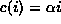
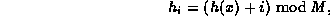
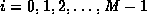
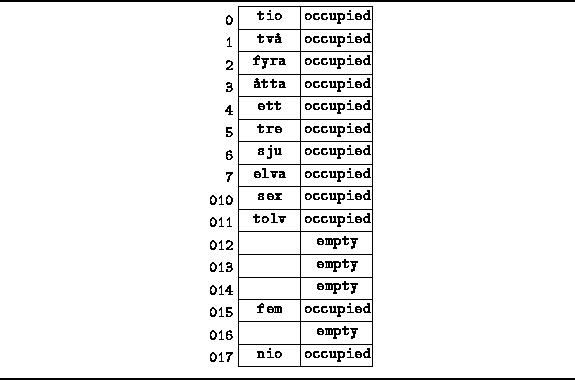

Data Structures and Algorithms
with Object-Oriented Design Patterns in C++
Data Structures and Algorithms
with Object-Oriented Design Patterns in C++The simplest collision resolution strategy in open addressing is called linear probing . In linear probing, the function c(i) is a linear function in i. I.e., it is of the form
Property 1 requires that c(0)=0.
Therefore,  must be zero.
must be zero.
In order for  to satisfy Property 2,
 and M must be relatively prime.
If we know the M will always be a prime number,
then any
and M must be relatively prime.
If we know the M will always be a prime number,
then any  will do.
On the other hand,
if we cannot be certain that M is prime,
then
will do.
On the other hand,
if we cannot be certain that M is prime,
then  must be one.
Therefore, linear probing sequence that is usually used is
must be one.
Therefore, linear probing sequence that is usually used is

for .
Figure  illustrates an example of
a scatter table using open addressing together with linear probing.
For example, consider the string "åtta".
This string hashes to array position
illustrates an example of
a scatter table using open addressing together with linear probing.
For example, consider the string "åtta".
This string hashes to array position  .
The corresponding linear probing sequence begins at position
.
The corresponding linear probing sequence begins at position
 and goes on to positions
and goes on to positions  ,
,  ,....
In this case,
the search for the string "åtta" succeeds after three probes.
,....
In this case,
the search for the string "åtta" succeeds after three probes.

Figure: Scatter Table using Open Addressing and Linear Probing
To insert an item x into the scatter table, an empty cell is found by following the same probe sequence that would be used in a search for item x. Thus, linear probing finds an empty cell by doing a linear search beginning from array position h(x).
An unfortunate characteristic of linear probing arises from the fact that as the table fills, clusters of consecutive cells form and the time required for a search increases with the size of the cluster. Furthermore, when we attempt to insert an item in the table at a position which is already occupied, that item is ultimately inserted at the end of the cluster--thereby increasing its length. This by itself is not inherently a bad thing. After all, when using the chained approach, every insertion increase the length of some chain by one. However, whenever an insertion is made between two clusters that are separated by one unoccupied position, the two clusters become one, thereby potentially increasing the cluster length by an amount much greater than one--a bad thing! This phenomenon is called primary clustering .
 Copyright © 1997 by Bruno R. Preiss, P.Eng. All rights reserved.
Copyright © 1997 by Bruno R. Preiss, P.Eng. All rights reserved.